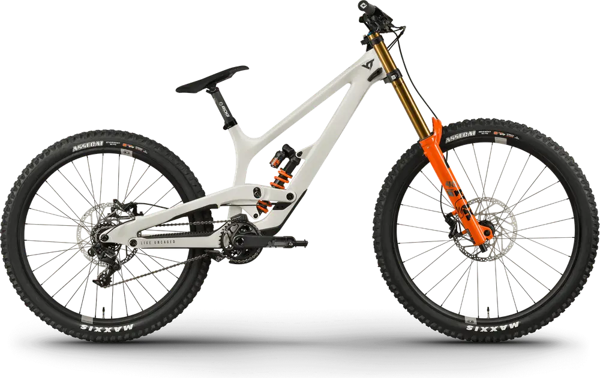

YT una marca alemana de bicicletas de descenso y enduro.
YT Tues

Precio: $6.199.00
Bicicleta de descenso con 203mm de recorrido.
YT Jeffsy

Precio: $4.699.00
Bicicleta de enduro con 150mm de recorrido.
YT Capra

Precio: $5.299.00
Bicicleta de enduro con 150mm de recorrido.